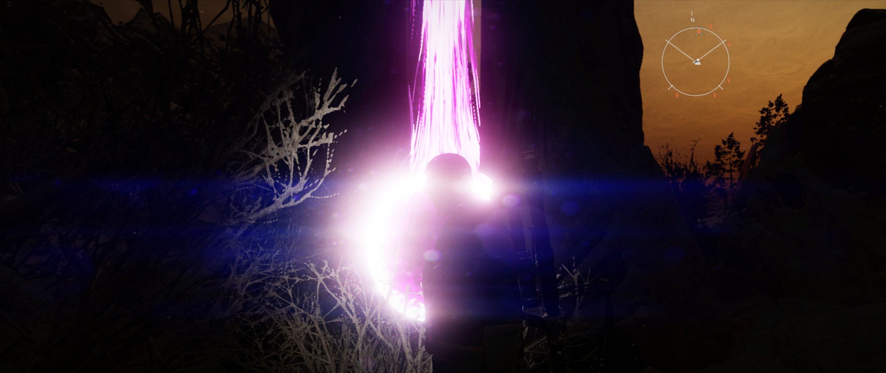
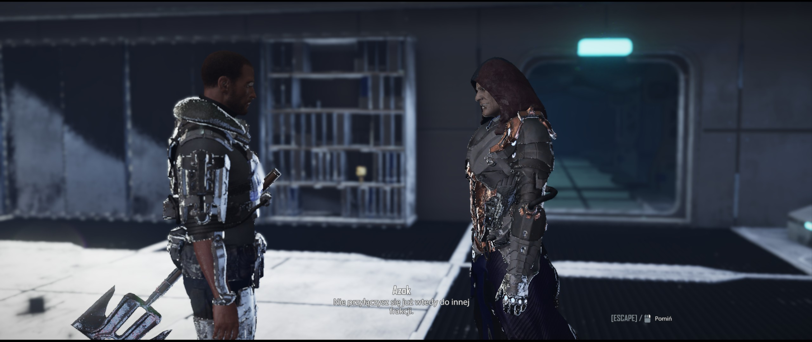

elex 2
ewolucja względem jedynki; fabularnie końcówka znów z rozumem i godnością człowieka i znowu dawkins jest w jej centrum; świat magalana przesuwa się tym razem bardziej na wschód, coby uwzględnić nową frakcję; do tego pojawiają się przetasowania na arenie postaci poprzednio mających znaczenie; największymi mankamentami są fatalne oświetlenie i poziomy głośności; poza tym stare śmieci i stare problemy, niektóre z nich rozwiązane; czy dobrze się bawiłem? - dopóki było coś w tym interesującego; czy grę polecam? - nie, można było się bardziej postarać
koszmarne prześwietlenia w ramach directx12
- gra pozwala na uruchomienie z użyciem dx11 albo dx12; z tym pierwszym nie ma problemów
- pierwszymi zwiastunami tego, że coś jest nie tak będą odbicia, refleksy i prześwietlenia od zupełnie nieistotnych obiektów otoczenia — [1], [2], [3]
- w międzyczasie można zwrócić uwagę na efekt flary i sposób odbicia od punktowych źródeł światła — [4], [5]
- spędzając czas w kanionie albo w kraterze dostrzeże się, że noc jest po prostu zbyt jasna — [6], [7], [8], [9], [10]
- potem zaczyna się widzieć coraz więcej problemów, w szczególności potężne ściemnienie za dnia czy prześwietlony tunel akurat w miejscu gdzie nic się nie świeci — [11], [12]
- natknąć się można również na „kadrowanie” z cyklu ciemno-jasno jakby wyjęte rodem z planu filmowego — [13], [14], [15]
- a do tego zdarza się dziwne podkreślenie ust i włosów — [16], [17]
- przełączenie gry na kanał beta, z rzekomo naprawionym dx12, powoduje pobranie dodatkowych 7 gb, a także niemożność wybrania opcji dx11, lecz jednak w dłuższej perspektywie czasowej przewijać się będą te same kłopoty, choć być może w nieco bardziej akceptowalnej formie — [18], [19], [20], [21], [22], [23], [24]
- niemniej w konwerterach nadal natkniemy się na świetlne abominacje — [25], [26]
- zatem najlepiej jest po prostu używać tylko dx11; wypisanie się z kanału beta w tym momencie poskutkuje ponownym pobieraniem połowy gry, czyli jakichś 40 gb



sprawy rozwiązane i nierozwiązane
- rozwiązano problem skalowania obrażeń broni poprzez zwiększenie ich asortymentu; zawsze można znaleźć gdzieś coś przyzwoicie dobrego; do tego, by zachęcić do ponownego odwiedzenia charakterystycznych miejsc znanych z poprzedniej odsłony, umieszczono w nich unikalne bronie, oferujące dodatkowe statusy i obniżone wymagania — [27], [28]
- przy okazji, tym razem istnieje sensowniejsza nagroda za znalezienie wszystkich fragmentów mapy prowadzącej do skarbu, czyli stały bonus +5% do zdobywanego doświadczenia — [29], [30]
- można teraz walczyć w powietrzu, o ile ulepszymy jetpacka; wyjątkiem są ciężkie bronie
- nadal występuje problem z amunicją, ażebyby wybierać się w wysokopoziomowe regiony, bo po prostu szybko jej zabraknie; chyba że się ją kupuje, bo teraz uszkodzone bronie można naprawiać, by móc je sprzedać za wyższą cenę
- można się wspinać, trzymać się wystających rur rękoma, co czasem można wykorzystać podczas dostawania się do wysoko położonych miejsc, by jetpack mógł się zregenerować
- kwestie dialogowe można wybierać enterem lub spacją; użycie tej ostatniej na ostatniej kwestii dialogowej powoduje pod jej koniec skok jaxa w miejscu
- najgorszym głosem dubbingowanym pozostaje głos jaxa
{kind=link}
artyzm
- ogółem zdarzają się ładne widoki, czy to za dnia czy w nocy — [31], [32]
- za pierwszym razem uwagę przykuwają nawet ładne ubrania postaci
- zdarza się widywać, zwłaszcza za pierwszym razem, dość urocze scenki rodzajowe, np. z chloe o jej ciężkim życiu jako właścicielka baru
- pojawia się motyw dzieci bawiących się w detektywów; dzieci jako tło świata i tegoż urządzenie próbuje się wykorzystywać tu i ówdzie
- animacje pomiędzy postaciami występujące w filmikach przerywnikowych są po prostu biedne i tandetne
- muzyka jest bardzo podobna do poprzedniej odsłony, jeżeli nie identyczna
walka
- kamera się nieznacznie oddala podczas biegania i walki; trzeba chwili by się do tego przyzwyczaić
- parowanie wybija przeciwników z rytmu i najskuteczniej zmniejsza pasek postury; dosłownie każdy cios podlega parowaniu, wyjątkiem są pociski; trzeba tutaj jednak dodać iż skuteczne parowanie nie zapewnia niewrażliwości na obrażenia od innych przeciwników, toteż parowanie wrogów w grupie słabo się sprawdza, zwłaszcza że ci wraży niemilcy nie będą czekać na naszą kontrreakcję; niemniej, takim sposobem można sobie poradzić i z latającym plugawstwem
- ikona trupiej czaszki nad głowami przeciwników znika, gdy zwiększa się poziom jaxa; nie ma innego czynnika - gra zmusza do levelowania (to niemalże skandal)
- często dostaje się obrażenia od przeciwników szybciej niż widzi się ich animacje, zwłaszcza jeśli tyczy się to kopnięć; ta swoista bezwładność bywa szczególnie irytująca, gdy zasięg ataków przeciwników okazuje się dłuższy niż wynikałoby to z odległości w świecie gry
- celownik przy strzelaniu jest przyciągany do przeciwnika, lecz nienachalne; efekt słabnie przy większej odległości; gwałtowniejszy ruch myszka przenosi celowanie w tryb uwolniony; zaliczyłbym to tej mechanice na plus jako że strzała lecąca w biały okrąg celownika, a nie czerwony, chybi celu, bez względu na odległość od stworzenia do którego szyjemy
- wrogowie reagują na światło latarki podczas skradania się i nie dadzą sobie wbić noża w plecy
dialogowanie
- w ramach dialogów pojawiają się czasem dwie identyczne kwestie; nie wiadomo jaka jest różnica, aczkolwiek można się domyślić, że chodzi o tendencję pozytywną/neutralną/negatywną — [33]
- zdarza się, w szczególności pod koniec dialogu, że npc kroczy dokładnie w naszą stronę w ramach animacji; gdy w tym czasie jax stoi zbyt blisko, ten nachodzi na niego, a animacja ta charakterystyczne „klatkuje”, zacina się zamiast spowodować odejście postaci w bok, za czym nierzadko podąża również i dźwięk; nie wygląda i nie brzmi to dobrze
- podczas rozmowy z innymi nakrycia czerepu znikają; tymczasem, gdy zaczynamy dialog z kupcem mając nałożone okulary, a potem wybierzemy opcję handlu, po czym kontynuujemy rozmówkę, to jax nagle będzie miał okulary założone
- towarzysze powtarzają się w tych samych miejscach w świecie tymi samymi uwagami
uciążliwości
- poruszanie się z jednoczesnym operowaniem kamerą nadal powoduje unik przy skierowaniu jej za bardzo w bok, gdyż strzałka w lewo lub prawo jest interpretowana jako przewrót taktyczny solsowy
- towarzysze używają plecaka odrzutowego za każdym razem, gdy wejdzie się przypadkiem na jakiś kamień czy beczkę, a dźwięk tegoż jest dość głośny w porównaniu do otoczenia
- niektóre przedmioty są umiejscowione w taki sposób, że trudno po nie sięgnąć; stoisz przy nich, widzisz je, one ciebie, a podnieść się dać nie chcą; jedynie określona odległość od tychże i odpowiednia pozycja kamery pomagają
- wybuchy potrafią potężnie ściąć grę; z moich obserwacji wynika, że dotyczy to wyłącznie spamowania z granatnika; święty granat ręczny z jakichś powodów ma się do tego bezkonfliktowo
- nieleczona choroba jaxa teleportuje go w pobliże konwerterów obcych; zawsze w te same miejsca, często pod koniec zadania, gdy nie możemy przeprowadzić treningu zapobiegawczego
- przydałaby się opcja „pokaż nowe” w ekwipunku, bo gwiazdka na oznaczenie nowości bywa słabo widoczna
- gdy użyjemy paska przewijania do zobaczenia na liście nowego wpisu w dzienniku lub bestiariuszu, a potem przejedziemy kursorem nad tenże, to pan intefejs postanowi, nieco dziwacznie, niejako „przyciągnąć” kursor powyżej lub poniżej rzeczonego wpisu, a samą listę ustawić tak, by nie był on widoczny na ekranie, tylko schowany dalej, coby trzeba było użyć ponownie paska przewijania
- poziomy trudności pomiędzy gagatkami do ubicia bywają nierówne; zwykle jest to tak, że zadania prowadzą nas do miejsc z niskopoziomowymi stworami, a zboczenie z tej ścieżki oznacza wplątanie się w megamasakrę piłą mechaniczną całej okolicy
- nie można wstrzymywać filmików przerywnikowych
- zapis stanu gry może się czasem długo wczytywać przy pierwszym uruchomieniem gry
spostrzeżenia
- broń naprawia się i ulepsza na kowadle po nauczeniu się określonej umiejętności, o czym można w ogóle nie wiedzieć; do tego mamy różne typy warsztatów, każdy z tychże znajdziemy w naszej osadzie
- można się dostać do głównych osad frakcji sposobem (w końcu mamy jetpacka); postaci nawet mogą taką możliwość wskazać w rozmowie, lecz na nic to, albowiem w pewnym momencie podbiegnie do nas strażnik i w błysku czarnego światła gra teleportuje nas przed bramę
- trzeba przyznać iż opisy umiejętności i atrybutów są bardzo dobre; zmiany rozpisane są dla ich każdego poziomu, przez co od razu wiemy na co się piszemy
- trudno się zdobywa elexit, zwłaszcza na początku, toteż najlepiej od razu zainwestować w umiejętność pozyskiwania trofeów zwierzęcych
- w każdej frakcji istnieje element wywrotowy (tak jakby), z którym można współpracować (złodzieje, heretycy, szpiedzy)
- podstawowe pancerze wszystkich frakcji znajdują się u wędrownych handlarzy, aczkolwiek wszystko to można znaleźć, nic nie trzeba kupować; lepszy sprzęt w ofercie pojawi się wraz ze zwiększaniem poziomu postaci
- warto zdobyć okulary przeciwsłoneczne na samym początku, albowiem jedne zaznaczają nam przez ściany żywe stworzenia, a drugie przedmioty w okolicy, co znacząco pomaga w bezbożnym plądrowaniu czeskich kapliczek
- pokonani przeciwnicy znikają jako dany zestaw monstrów, a po jakimś czasie w ich miejsce pojawiają się inne, zwykle w mniejszej ilości
- misje z towarzyszami potrafią ukazywać wątki, które dopiero zostaną poznane w ramach misji głównych, a zatem przewidują przyszłość
- charakterystyczny dżingiel zdobywania many i elexu został rozszerzony na unikalne bronie i paliwo do jetpacka
- zdarzają się doprawdy nieoczekiwane ragdole
- latarka świeci tam, gdzie patrzy kamera, a nie jax
- zabijanie szczurów zwiększa poziom zniszczenia; wpływa on jedynie na charakter zakończenia i możliwość wyboru niektórych opcji dialogowych
- niektóre dialogi przywołują retrospektywne filmiki
- „jeden na jednego” to dla mnie zadanie-zagadka (zupełnie nieistotny quest poboczny); albo jego implementacja jest zepsuta, albo ścieżka do celu została naprawdę dobrze ukryta
- asgar jest zupełnie niepodobny do tego z jedynki
zakończenie
- dex (syn jaxa) staje się ważną częścią fabuły pod koniec
- samo zakończenie to po prostu kolejne plansze z tekstem, przedstawiające zmiany w świecie jakie się dokonały na mocy decyzji podjętych przez jaxa; osiągnięte przeze mnie na 62. poziomie postaci (do tego momentu można nauczyć się wszystkich umiejętności)
- końcówka wymusza samodzielną walkę w pojedynkę, zabierając nam towarzyszy; co więcej ostatni boss jest pod tym kątem dość wymagający o tyle, że wali jak ciężarówka
- w scence przerywnikowej rzeczonego bosa widać wydłużoną teksturę jaxa; im dalej w bród z grą, tym więcej niedociągnięć
dubbing i lokalizacja
- najbardziej nieodpowiednio dubbingowanym głosem jest głos głównej postaci (artur dziurman); podejście wybitnie teatralne i nastawione na permanentny wkurw; po angielsku jest już to bardziej wyważone (taliesin jaffe); z drugiej strony jednak, na dłuższą metę, angielskie głosy są na tyle wyrównane i podobne do siebie, że wręcz zabierają elexowatość elexowi — [34], [35], [36]
- większość głosów postaci jest wystarczająco dobra do swej roli, przy czym nieczęsto niektóre kwestie są wypowiadane z bezsensowną emocjonalnością, niepasującą do sytuacji; nie pomaga tutaj zdarzące się złe określenie płci, co jest szczególnie dziwaczne, gdy słyszy się żeński głos wypowiadający się w formie męskiej, gdzie kontekst rozmowy nijak tego nie uzasadnia (izabela bukowska jako nyra) — [37]
- chaosu w odbiorze dopełniają nierówne poziomy głośności między postaciami a odgłosami walki
- co więcej, przewijają się literówki pokroju „sobię” czy też takie bez pięknych polskich ogonków (skandal!), tudzież zapisane „im”, a wypowiadane „mi”; jednakowoż sprawa jest zgoła poważniejsza: zapisane „dobrze, dobrze” zamienia się na mówione „bardzo dobrze” albo „zobaczymy” na „wiesz, ja... niezupełnie”; wstyd, hańba, kompromitacja
- poza tym w jedynce wszyscy mówili xakor („ksakor”), a tutaj prawie wszyscy mówią „zakor”; irytująca niespójność
- jax czasem mówi sam do siebie, lecz nie wiadomo z jakiego powodu, ani do czego to się odnosi; bo o co chodzi z tym, że, zupełnie niesprowokowany, powiada sobie: „ach, kurwa...”?
sprawa linuksowa
- shadery zajmują 2.5 gb i przetwarzają się dość długo
- sugerowane opcje uruchamiania: DXVK_ASYNC=2 WINE_FULLSCREEN_FSR=2 WINE_FULLSCREEN_FSR_MODE=performance WINE_FULLSCREEN_FSR_CUSTOM_MODE=1280x540 %command%